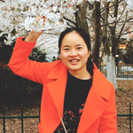

刘园园
- 电话：13022157552
- 邮箱：1551176788@qq.com
- 学校：河南职业技术学院
- 专业：计算机多媒体技术
- 经验：3年多
让图形与文字在界面上共舞。在界面中提炼产品的灵魂，让它们以最美的方式、最好的姿态呈献给用户，并突出信息点和功能点，从而传达给用户最极致的感官体验,。当然不断的借鉴与学习是我不断升华自我的要求，如你所知，我一直走在超越自己的路上!
工作经历
- 2016.6~2017.11
- 上海麦坚时投资管理有限公司 | 网页设计师 | 18个月(至今）
- 工作职责：
- 1、 按需求设计出简洁，精致的官网界面，不断优化用户体验，与前端、文案及时沟通对接；
- 2、负责ios和Android端产品的UI界面设计，对产品整体视觉风格进行把控；
- 3、负责对接平台运营，配合营销推广的需求，及时创意、设计、制作Banner广告设计，完
成活动海报、广告图、H5、公众号文章配图、专题页的设计；
- 4、公司项目logo及整体VI手册设计与相对应网站、手机版视觉设计；
- 5、积极响应协助配合其他部门的设计工作；
- 6、根据开发部门需求做出相应的网页GIF图；
- 2014.8~2016.6
- 上海兢鑫软件有限公司 | 网页设计师 | 19个月
- 工作职责：
- 1、 负责前期和客户交流沟通网站需求与页面表现形式、视觉要求；
- 2、负责项目中各种交互界面、图标、LOGO、按钮等相关元素的
设计与制作；
- 3、熟练掌握门户网站、电子商务网站（包括pc版、手机版）流程；
- 4、掌握初级代码，切图的基础常识，能积极与开发沟通，推进界面
及交互设计的最终实现；
- 5、负责商品图片的后期处理：精修、调色、合成、各种常规及特殊调色。
- 2013.11~2014.7
- 河南深港文化传播有限公司 | 平面设计师 | 8个月
- 工作职责：
- 1、 负责客户画册整体排版，视觉创意；
- 2、负责客户logo及画册整体视觉色彩搭配；
- 3、熟练掌握画册制作流程，对印刷工艺及材料有一定认识；
- 4、准时、高效、优质完成设计要求，独立胜任项目整体设计，
对设计成品的质量进行监控；
- 5、能快速、全面、有效地领悟客户信息；具有团队合作意识，
具有敬业精神。